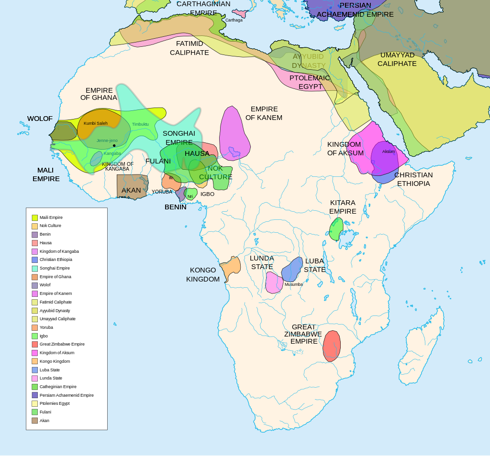
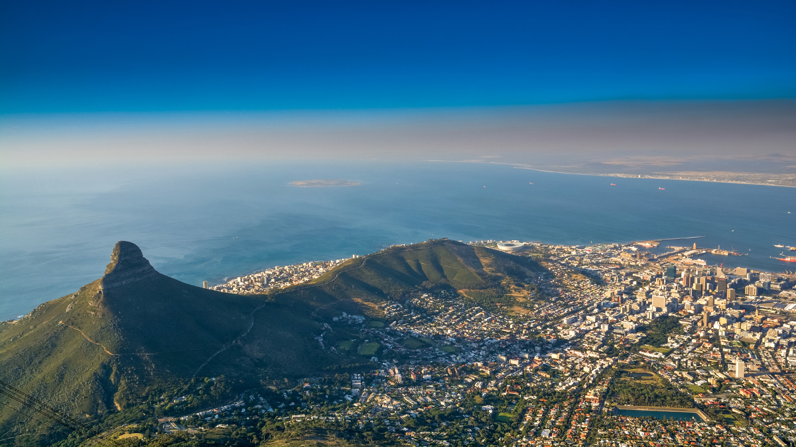
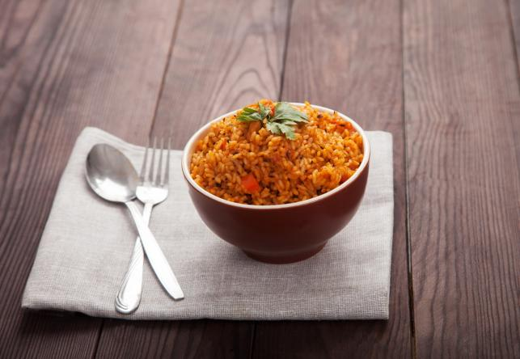

A kontinens, ahol az emberiség története kezdődött
Általános információk
Afrika a világ második legnagyobb kontinense, területe kb. 30,37 millió négyzetkilométer, lakossága meghaladja az 1,4 milliárd főt. 54 független ország található itt. Az afrikai táj változatos: sivatagok, esőerdők, szavannák és magashegységek egyaránt megtalálhatók.
Történelem

Afrika a modern ember bölcsője, ahol a legkorábbi emberi leleteket találták. A kontinensen olyan nagy civilizációk virágoztak, mint Egyiptom, Kus, Mali Birodalom vagy a Zulu Királyság. A gyarmatosítás erősen befolyásolta Afrika történelmét, de az 1960-as évektől kezdődően egyre több ország nyerte vissza függetlenségét.
Mai Afrika

Afrika jelenleg gazdasági és társadalmi átalakuláson megy keresztül. Növekvő népessége, fiatal társadalma és természeti erőforrásai révén egyre fontosabb szereplő a globális gazdaságban. Vannak még kihívások, mint a szegénység és a konfliktusok, de egyes országok – mint Nigéria, Kenya és Dél-Afrika – dinamikusan fejlődnek.
Természeti kincsek Afrikában
A kontinens bőséges nyersanyagkészlettel rendelkezik, amelyek fontos szerepet játszanak a gazdaságban.
Erőforrás
Főbb termelő országok
Felhasználás
Arany
Dél-Afrika, Ghana
Ékszerek, befektetés
Kobalt
Kongói DK
Elektromos akkumulátorok
Olaj
Nigéria, Angola
Energiahordozó
Gasztronómia

Az afrikai konyha különleges és regionálisan eltérő. Nyugat-Afrikában népszerű a Jollof rizs, keleten az injera kenyér, délen pedig a chakalaka és a bobotie. A fűszeres, gazdag ízek jellemzik. Az étkezés gyakran közösségi élmény, és sokszor kézzel fogyasztják az ételeket.